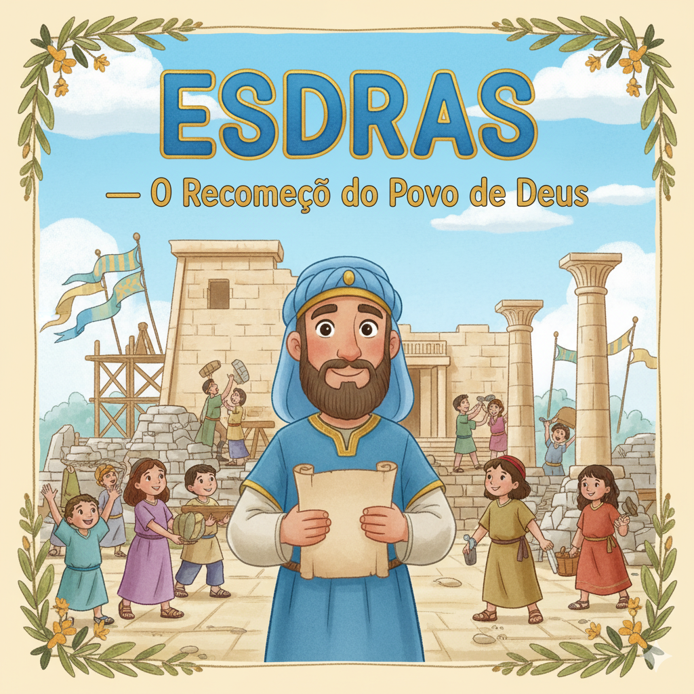
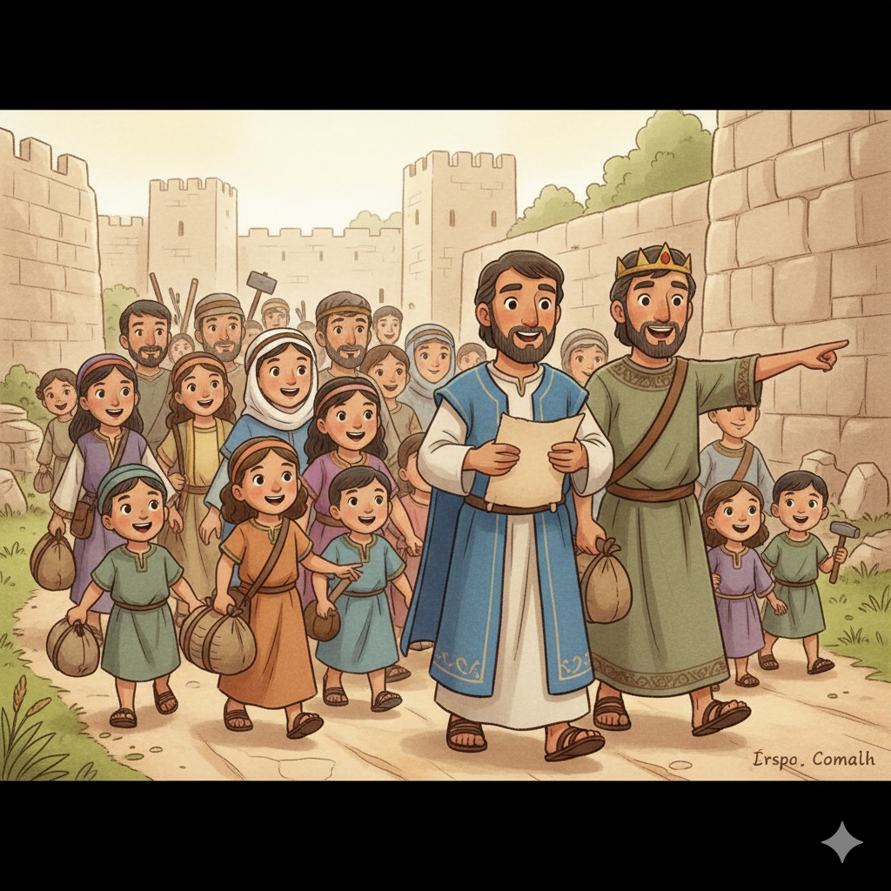

Reconstrução, Recomeço e Renovação — Um Resumo Visual para Crianças
Esdras era um escriba fiel,
Estudava a lei com coração gentil.
Não só para saber, mas para obedecer,
E ensinar ao povo como Deus quer viver!
📖 Quando você lê a Bíblia com vontade
de aplicar na vida com fidelidade,
Deus te usa do mesmo jeito,
Para mudar o mundo à tua volta com efeito!
O rei Ciro não conhecia o Deus de Israel,
Mas Deus tocou seu coração de forma especial.
Ele mandou o povo voltar pra sua terra,
E assim Deus acabou com aquela guerra!
🏗️ Deus está no controle de tudo e todos,
Ele abre portas por métodos não conhecidos.
Quando achamos que não há saída,
Ele age de um jeito que muda a vida!
O povo havia pecado e perdido tudo,
70 anos em cativeiro — duro mas agudo.
Mas Deus restaurou, deu nova oportunidade,
O templo e a vida foram reconstruídos com bondade!
🌱 Com Deus sempre há recomeço,
Não importa o erro, não importa o processo.
Ele perdoa, restaura e renova,
Nossa fé a cada dia melhora!
📘 Moral da história:
Estude, obedeça e ensine a Palavra —
como Esdras, que dedicou o coração ao Senhor! 💙

O escriba e sacerdote que dedicou o coração a estudar, praticar e ensinar a lei de Deus ao povo que voltou do exílio.
O rei da Pérsia que Deus usou para libertar o povo israelita do cativeiro e financiar a reconstrução do Templo em Jerusalém.
Líder do primeiro grupo de retornados que conduziu quase 50.000 pessoas de volta a Jerusalém e iniciou a reconstrução do Templo.
"Assim diz Ciro, rei da Pérsia: O Senhor, o Deus dos céus, me deu todos os reinos da terra e me ordenou que lhe construísse um templo em Jerusalém, que está em Judá."
— Esdras 1:2
Após 70 anos exilados na Babilônia, chegou a hora de voltar! O profeta Jeremias havia anunciado esse prazo, e Deus cumpriu cada palavra. Ciro foi escolhido por Deus para fazer isso acontecer.
Isaías chamou Ciro pelo nome 150 anos antes dele nascer! (Is 44:28) Deus sabia o que ia acontecer. Isso mostra que nenhuma palavra de Deus cai no vazio — tudo que Ele promete, Ele cumpre!
"Com aclamação e louvor, cantavam: 'O Senhor é bom e o seu amor por Israel dura para sempre.' E todo o povo soltou um grande grito de júbilo ao louvar ao Senhor."
— Esdras 3:11
Quando os alicerces do Templo ficaram prontos, os anciãos choravam ao lembrar do Templo antigo de Salomão — e os jovens gritavam de alegria! Os dois sons se misturavam. Deus é o Deus de todas as emoções.
Os inimigos tentaram parar a construção e conseguiram por 16 anos! Mas os profetas Ageu e Zacarias animaram o povo, e com o apoio do rei Dario, o Templo foi finalmente concluído em 516 a.C.
"Esdras havia dedicado o seu coração a estudar a lei do Senhor, a praticá-la e a ensinar os seus decretos e leis em Israel."
— Esdras 7:10
A ordem importa! Esdras primeiro estudou, depois praticou na própria vida e só então foi ensinar. Não adianta só saber: Deus quer que a gente viva o que aprende antes de falar para os outros.
Quatro vezes em Esdras aparece "a mão boa de Deus estava sobre ele" (Esd 7:6, 7:9, 7:28, 8:18). Quando andamos nos caminhos de Deus, a mão Dele nos guia e nos protege em tudo!
"Ó meu Deus, fico envergonhado e nem consigo levantar o rosto para ti, porque os nossos pecados ultrapassam a nossa cabeça e a nossa culpa chegou ao céu."
— Esdras 9:6
Esdras ficou tão abatido com os pecados do povo que se prostrou no chão, chorando e orando. Ele nem era o culpado, mas intercedeu com o coração partido. Isso é liderança e amor de verdade!
O povo reconheceu seu erro e se comprometeu a mudar. Reforma verdadeira começa no coração. Não bastava reconstruir o Templo de pedra; era preciso reconstruir a vida com Deus no centro.
"Esdras havia dedicado o seu coração a estudar a lei do Senhor, a praticá-la e a ensinar os seus decretos e leis em Israel."
— Esdras 7:10
Este versículo revela o segredo da vida de Esdras: estudar → praticar → ensinar. Não basta saber a Bíblia de cor — Deus quer que a gente viva o que aprende e compartilhe com os outros!
📚 Como estudar?
Leia a Bíblia todo dia, mesmo que seja só um versículo. Pergunte: "O que Deus está me dizendo aqui?"
🚶 Como praticar?
Antes de ensinar alguém, viva você mesmo. Seja honesto, gentil, obediente — isso é praticar a Palavra.
🗣️ Como ensinar?
Conta para um amigo o que aprendeu na Bíblia. Seja um "Esdras" na sua escola, família e turma!
A tradição judaica diz que Esdras também escreveu 1 e 2 Crônicas! O final de 2 Crônicas é quase idêntico ao início de Esdras — dois livros que contam a mesma história de ângulos diferentes.
Esdras 2 lista exatamente 49.897 pessoas que voltaram no primeiro retorno com Zorobabel — mais 7.337 servos e 200 cantores! Deus se importa com cada pessoa pelo nome.
Isaías chamou Ciro pelo nome 150 anos antes de ele nascer (Is 44:28; 45:1)! Assim como Ciro libertou Israel do cativeiro da Babilônia, Jesus veio nos libertar do cativeiro do pecado. (Lc 4:18)
Deus usou o rei Ciro — um rei que não conhecia a Deus — para libertar o povo. Isso te surpreende? Você consegue pensar em alguém que Deus usou na sua vida de forma inesperada?
Esdras seguiu essa ordem: estudou, praticou e depois ensinou. Você consegue pensar em algo da Bíblia que aprendeu e já tentou praticar? Como foi isso na sua vida?
O povo voltou para Jerusalém depois de 70 anos e recomeçou do zero. Já teve algum momento que você precisou "recomeçar" — na escola, numa amizade ou com Deus? Como foi?
Leia Esdras 7:10 todo dia durante uma semana. Toda vez que ler, pense: "O que eu aprendi hoje que posso praticar amanhã?"
Assim como o povo reconstruiu o Templo pedra a pedra, pense em algo na sua vida que precisa ser "reconstruído" — um hábito, uma amizade ou oração diária — e dê o primeiro passo esta semana!
Conta para alguém (pai, mãe, amigo ou irmão) uma coisa que você aprendeu sobre Esdras. Seja um pequeno "escriba de Deus" e compartilhe a história!
Trilho Kids | Desenvolvido com ❤️ para crianças © 2025